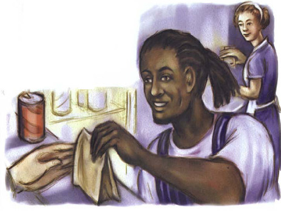
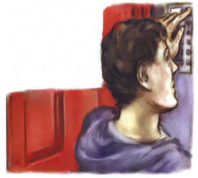
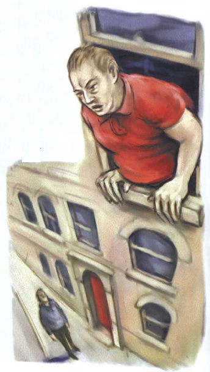
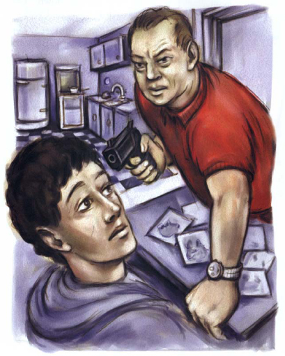

Listen to Part 1:
Đã đến giờ ăn trưa và Pete rất đói. Cậu quyết định tìm thứ gì đó để ăn.
Có một vài cửa hàng trên con phố gần nhà thờ. Một trong số chúng bán bánh mì kẹp và nước giải khát. Pete bước vào. Cậu nói chuyện với người đàn ông trong cửa hàng.
‘Làm ơn cho tôi một chiếc bánh mì kẹp thịt gà và một cốc cola,’ cậu nói.
Người đàn ông bỏ chiếc bánh mì kẹp vào túi giấy.
‘Ông có biết một cô gái tóc vàng đeo kính tròn nhỏ không?’ Pete hỏi. ‘Cô ấy đôi khi đi qua nghĩa trang nhà thờ.’
Có một người phụ nữ ở phía sau cửa hàng. Cô đang làm bánh mì kẹp. Đột nhiên, cô ngẩng đầu lên.

‘Bạn đang nói đến Amy Bates đấy à?’ Người phụ nữ hỏi Pete.
‘Tôi không biết tên cô gái đó,’ Pete trả lời.
‘Amy tóc vàng và đeo kính tròn,’ người phụ nữ nói. ‘Cô ấy thỉnh thoảng đến đây mua bánh mì kẹp.’
Listen to Part 2:
‘Cô ấy có sống gần đây không?’ Pete hỏi.
‘Tôi nghĩ cô ấy sống ở Richfield House,’ người phụ nữ trả lời. ‘Cô ấy sống trong một căn hộ ở đó. Richfield House cách đây hai phố.’
‘Cảm ơn,’ Pete nói.
Pete ăn chiếc bánh mì kẹp và uống hết cốc cola. Sau đó, cậu đi đến Richfield House.
Richfield House là một tòa nhà lớn, cũ kỹ. Có sáu nút chuông gần cánh cửa lớn màu đỏ. Mỗi nút chuông đều có một cái tên bên cạnh. Một trong số đó ghi ‘Amy Bates’.

Pete nhấn ngón tay vào nút chuông và bấm. Sau đó, cậu đợi. Không có tiếng trả lời nào cả.
‘Này!’ Ai đó gọi.
Pete nhìn lên và thấy một người đàn ông. Người đàn ông đang nhoài người ra từ một trong những cửa sổ. Cửa sổ ở trên cùng của tòa nhà.
Đó là Gã khổng lồ!
Listen to Part 3:

‘Bạn đến tìm Amy à?’ Gã khổng lồ gọi.
Pete chần chừ một lúc. Sau đó, cậu gọi với.
‘Vâng!’
‘Hãy lên căn hộ của tôi,’ gã đàn ông gọi xuống. ‘Tôi cũng đang đợi cô ấy.’
Pete nghe thấy tiếng ‘BUZZZZ’. Cậu đẩy cánh cửa lớn màu đỏ và nó mở ra. Cậu bước vào. Cậu thấy một số bậc thang và bắt đầu trèo lên. Pete leo mãi! Cuối cùng, cậu cũng lên đến tầng cao nhất.
Gã khổng lồ đang đợi cậu. Hắn đứng cạnh cửa một căn hộ. Cánh cửa khẽ mở.
‘Xin mời vào,’ Gã khổng lồ nói.
Pete và Gã khổng lồ bước vào căn hộ. Hắn đóng cửa lại.
Listen to Part 4:
‘Đây có phải là căn hộ của Amy không?’ Pete hỏi.
‘Không,’ Gã khổng lồ trả lời. ‘Đây là căn hộ của tôi. Nhưng Amy sẽ sớm đến đây.’
Họ bước vào một căn phòng lớn. Cửa sổ mở và Pete nghe thấy tiếng xe cộ trên đường phố bên ngoài. Có một vài chiếc ghế và một cái bàn gần cửa sổ. Ở một góc phòng có một cái bếp nhỏ. Bên cạnh bếp là một bồn rửa. Gần bồn rửa là một cánh cửa. Cánh cửa đang đóng. Pete nhìn vào cánh cửa.
‘Liệu có phải đó là cửa phòng tắm không?’ Cậu tự hỏi.
Gã khổng lồ kéo một chiếc ghế ra khỏi bàn.
‘Hãy ngồi xuống,’ hắn nói. ‘Amy sẽ sớm đến thôi.’
Pete ngồi xuống.
‘Tại sao bạn lại muốn gặp Amy?’ Gã khổng lồ hỏi.
‘Tôi - tôi có thứ gì đó để đưa cho cô ấy,’ Pete trả lời.
Gã khổng lồ thò tay vào một ngăn kéo trong bàn. Một lát sau, hắn lại rút tay ra.
Listen to Part 5:
Và bây giờ, trong tay hắn có một khẩu súng lục!
